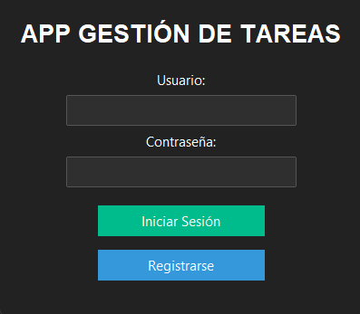
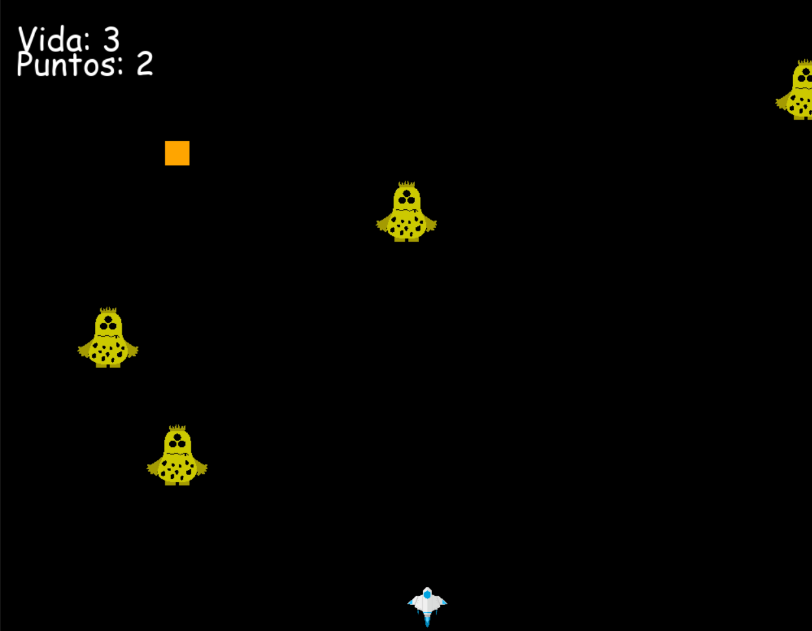
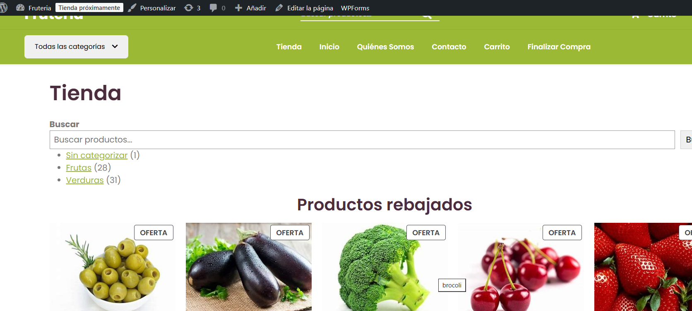
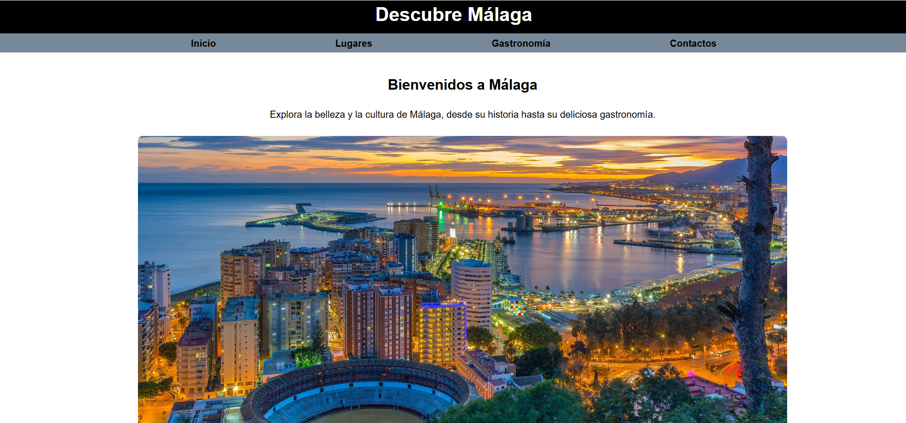
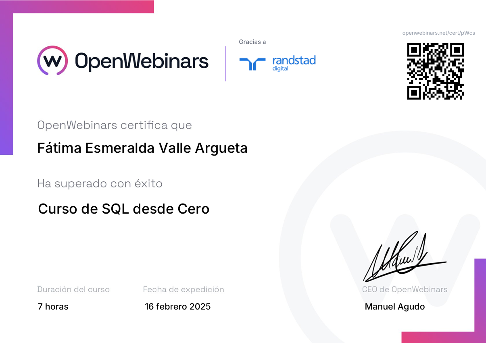
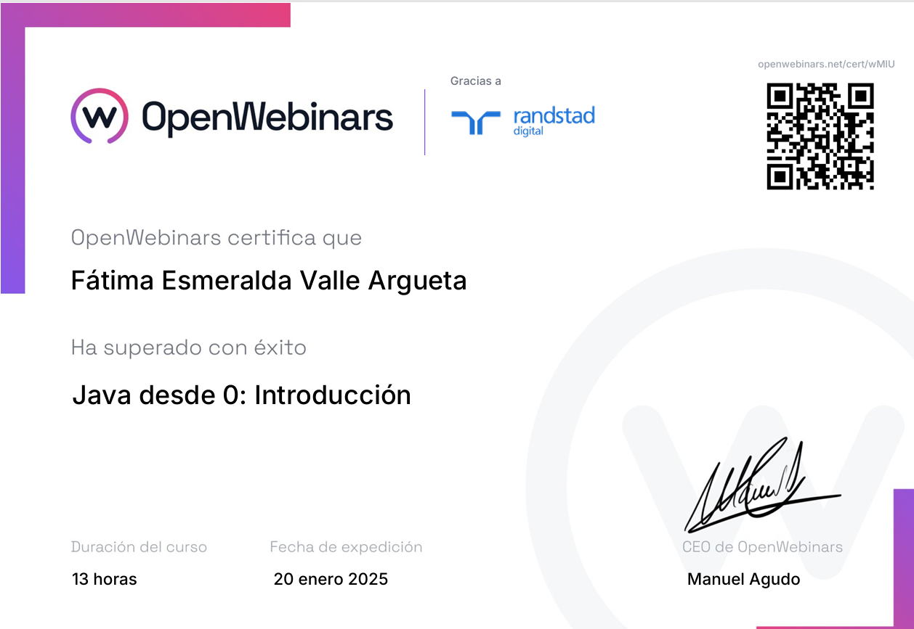
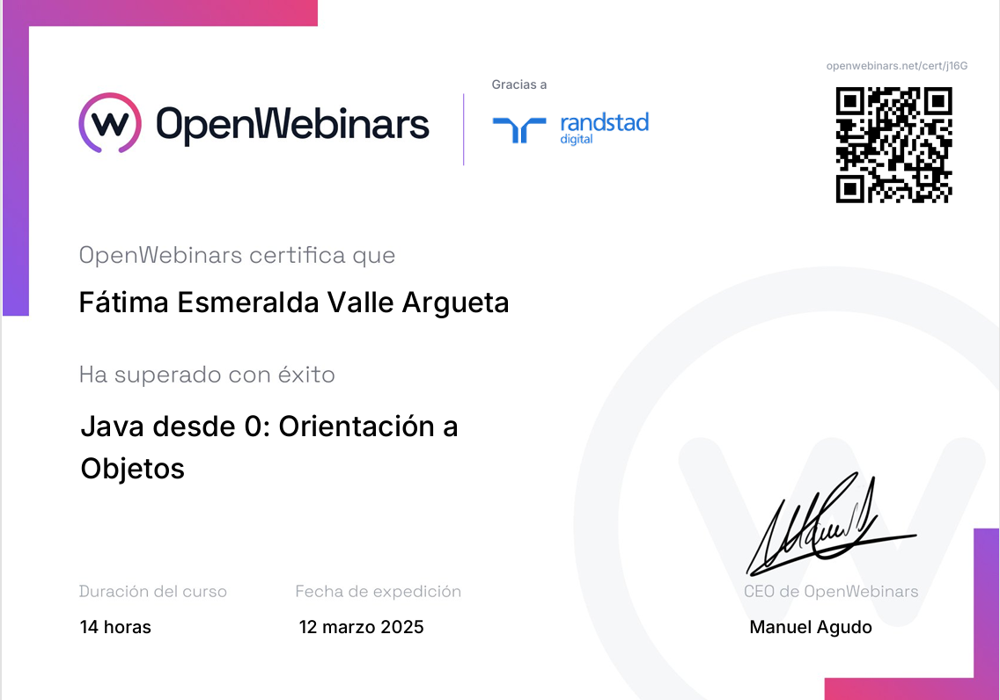
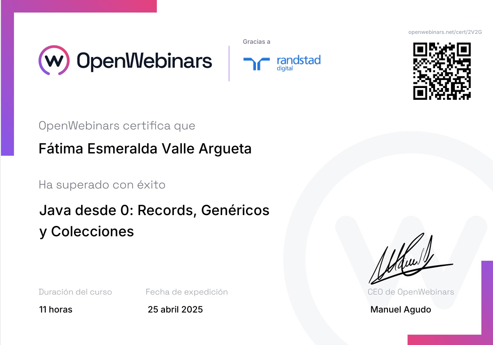
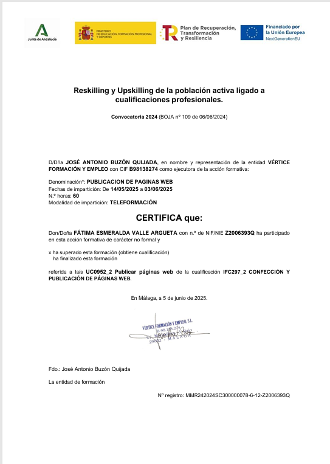

Técnico Superior en Desarrollo de Aplicaciones Multiplataforma (DAM)
Desarrollo de software · Análisis de datos · Automatización
Soy Técnico Superior en Desarrollo de Aplicaciones Multiplataforma (DAM), con experiencia práctica en análisis de datos y automatización de procesos.
Durante mis prácticas profesionales en SIIG desarrollé aplicaciones locales con Python y Pandas para automatizar tareas repetitivas, procesar archivos de datos y generar informes, facilitando el trabajo del equipo.
Cuento con conocimientos en desarrollo de aplicaciones de escritorio, móviles y web, programación, bases de datos, APIs y tecnologías multiplataforma.
Me caracterizo por mi capacidad analítica, aprendizaje autónomo, resolución de problemas y adaptación a nuevas tecnologías. Busco una oportunidad para aportar mis conocimientos y seguir creciendo profesionalmente.
Prácticas profesionales · 4 meses
Python · FastAPI · React · Ionic · TypeScript · MySQL · Azure
Aplicación multiplataforma para gestionar gastos, categorías, presupuestos y estadísticas mediante una API REST.
Angular · Python · FastAPI · SQLAlchemy · MariaDB
Plataforma web para gestionar torneos de eliminación directa, jugadores, brackets, combates y estadísticas.
Java · Android Studio · Firebase Firestore · Firebase Authentication
Aplicación Android de tutoriales multilingües con autenticación mediante Google y contenido dinámico almacenado en Firebase.
👥 Proyecto desarrollado en equipo de 5 personas.
Java · Swing · MySQL
Aplicación de escritorio para la gestión de pacientes, empleados, salas y camas.
Android Studio · Java · Kotlin
Aplicación móvil Android orientada al registro y gestión de experiencias y viajes.
Angular
Aplicación web para la gestión de productos y almacén.
C# · .NET · MySQL
Aplicación para la gestión de información de una fábrica de vehículos.
Java
Aplicación orientada a la gestión y organización del reparto de paquetes.
Java
Aplicación de radio desarrollada durante la formación.
Python
Juego desarrollado en Python con lógica de juego y sistema de puntuación.
HTML · CSS · JavaScript · WordPress
Desarrollo de diferentes proyectos web y sitios realizados durante la formación.








